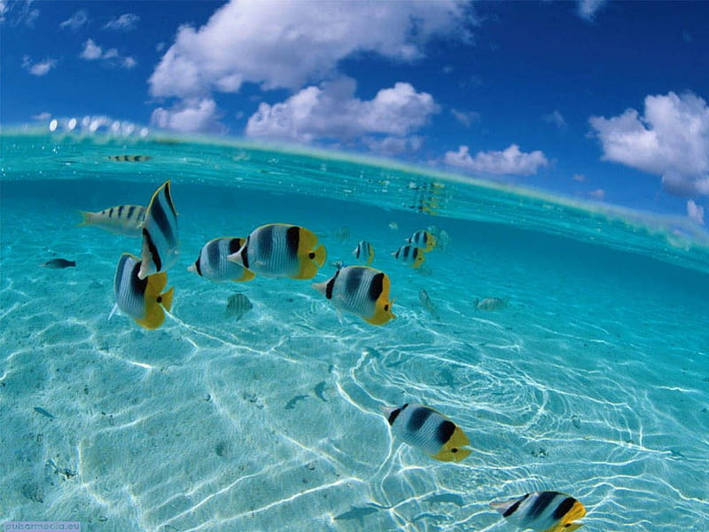
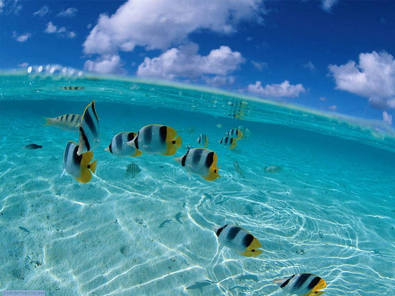

Los océanos son parte de la superficie del planeta ocupada por el agua de mar que rodea los continentes y actualmente cubren alrededor del 71% de la Tierra. Hay cinco océanos en la Tierr a: el Pacífico, el Atlántico, el Índico, el Antártico y el Ártico.
¿Cual es le papel e importancia de los oceanos?
Los océanos son parte de la superficie del planeta ocupada por el agua de mar que rodea los continentes y actualmente cubren alrededor del 71% de la Tierra. Hay cinco océanos en la Tierra: el Pacífico, el Atlántico, el Índico, el Antártico y el Ártico
 
